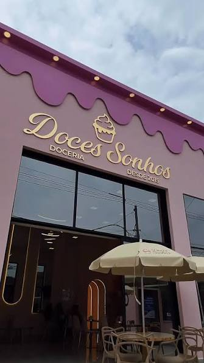
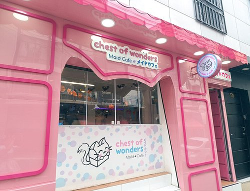
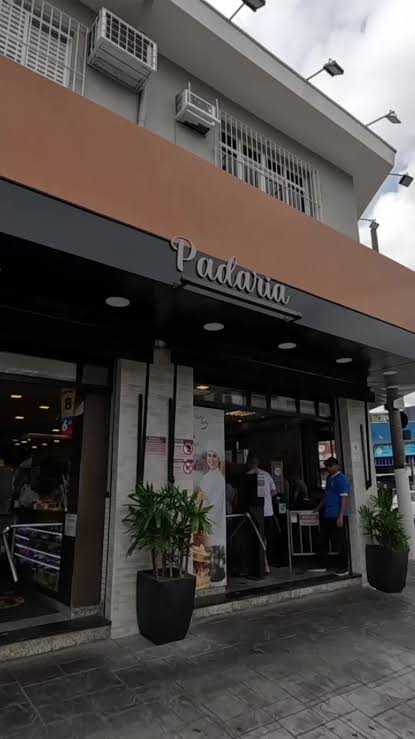
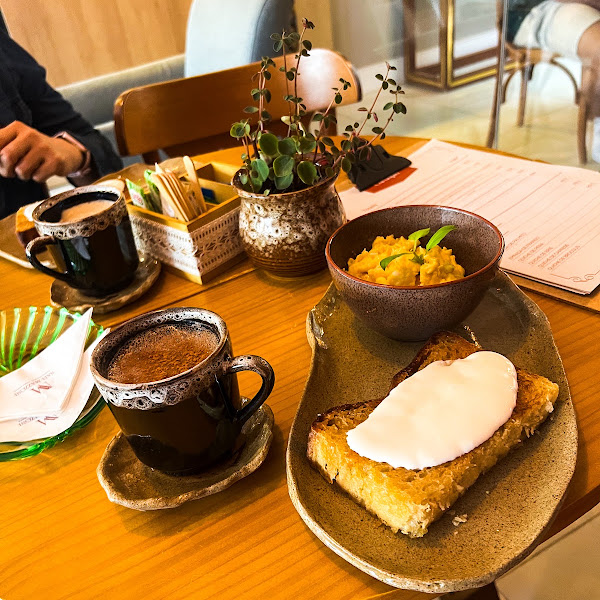
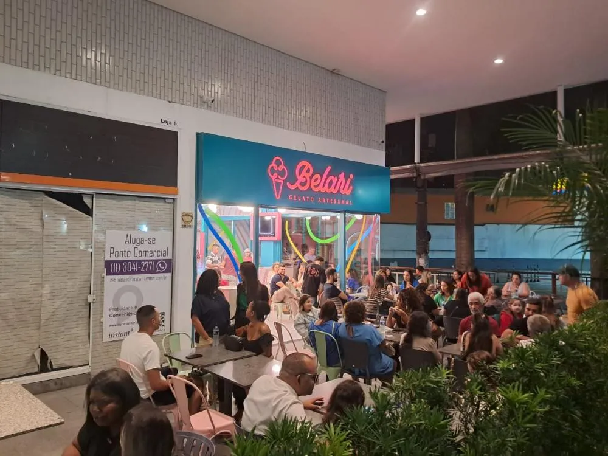

Doceria Doces Sonhos
Uma doceria charmosa com uma variedade de doces artesanais e bebidas quentes. Perfeita para momentos de tranquilidade com um lugar lindo e instagramável.
📍Barueri • Consultar Preços dos alimentos no siteUma seleção de cafés perto de você, com mesa boa pra ficar e wifi que não é a prioridade. Dá pra estudar, trabalhar ou só sentar com os amigos por horas.

Uma doceria charmosa com uma variedade de doces artesanais e bebidas quentes. Perfeita para momentos de tranquilidade com um lugar lindo e instagramável.
📍Barueri • Consultar Preços dos alimentos no site
É um famoso maid café temático que oferece uma experiência imersiva inspirada na cultura pop japonesa, um lugar único onde você se vai se divertir e comer muito!
📍São Paulo (Liberdade) • Consultar Preços dos alimentos no site
Uma padaria charmosa com uma variedade de pães artesanais, doces, salgados em geral (incluindo almoço) e bebidas diversas.Um lugar perfeito para você reunir seus amigos para uma refeição saborosa.
📍Osasco • Consultar Preços dos alimentos no site
Uma cafeteria funcional linda e instagramável, ideal para aquele amigo que possui restrições alimentares mas que gosta de comer e se divertir.
📍 Alphaville • Consultar Preços dos alimentos no site
Gelatos artesanais e sobremesas cheias de amor
📍 Barueri • Consultar Preços dos alimentos no site